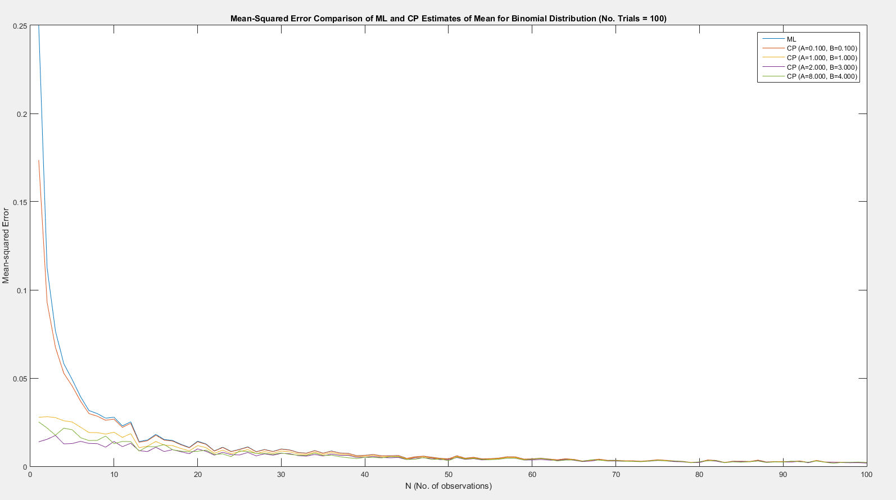
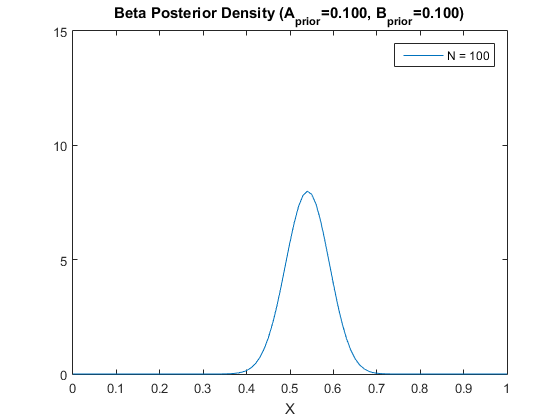
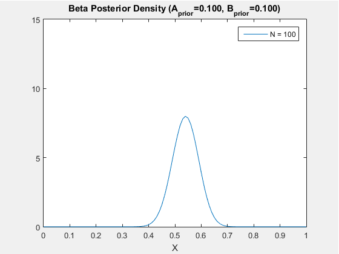
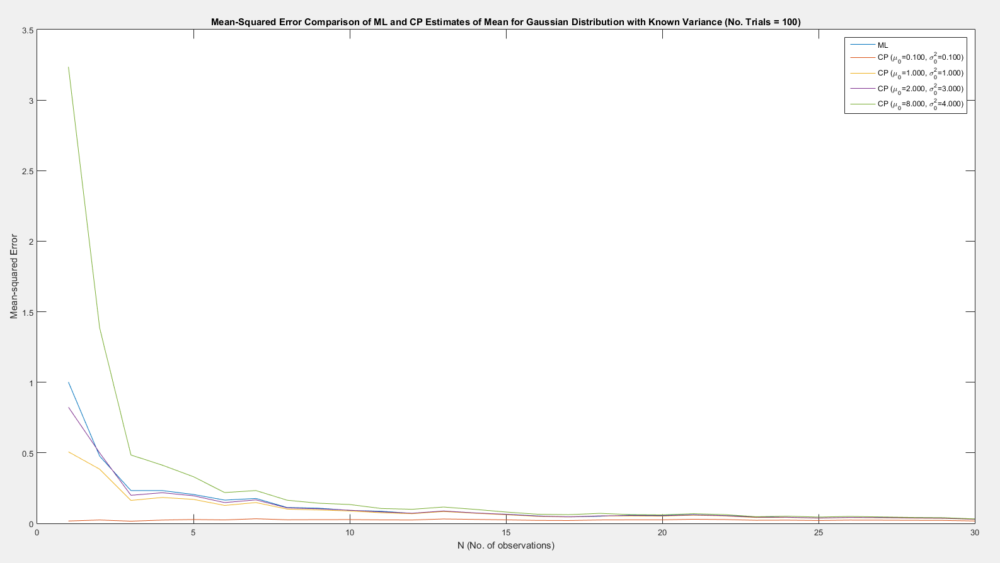
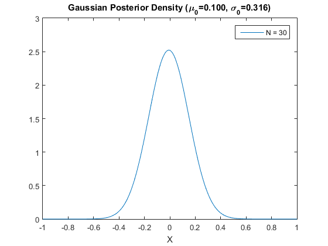
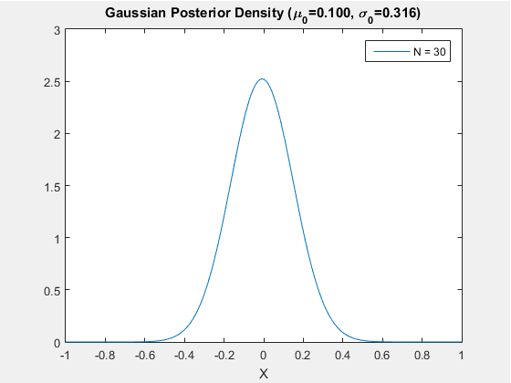
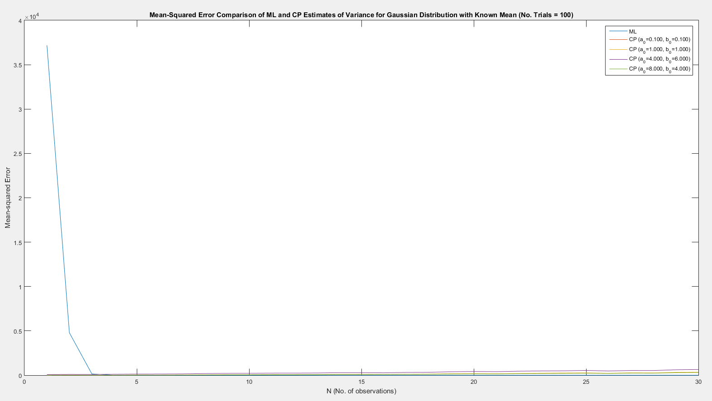
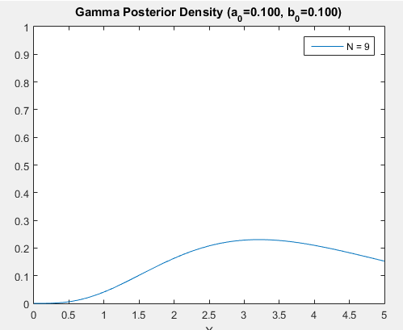

Contents
- Binomial Distribution - Random Data Generation
- Binomial Distribution - Mean-Squared Errors of ML and CP Estimates
- Binomial Distribution - Modeling Posterior Density (Beta Distribution)
- ~~~~~~~~~~~~~~~~~~~~~~~~~~~~~~~~~~~~~~~~~~~~~~~~~~~~~~~~~~~~~~~~~~~~~~
- Gaussian Distribution - Random Data Generation
- Gaussian Distribution, Known Variance, Unknown Mean - Mean-Squared Errors of ML and CP Estimates
- Gaussian Distribution, Known Variance, Unknown Mean - Modeling Posterior Density (Gaussian Distribution)
- ~~~~~~~~~~~~~~~~~~~~~~~~~~~~~~~~~~~~~~~~~~~~~~~~~~~~~~~~~~~~~~~~~~~~~~
- Gaussian Distribution, Known Mean, Unknown Variance - Mean-Squared Errors of ML and CP Estimates
- Gaussian Distribution, Known Mean, Unknown Variance - Modeling Posterior Density (Gamma Distribution)
Binomial Distribution - Random Data Generation
clc; clear all; close all; % Binomial distribution parameters N = 1:1:100; % No. of observations, we are interested in various N values p = 0.5; % Probability of success for one trial % - Also the mean for Bernoulli distribution (individual trials) % - This is the true value of the parameter being compared with % the ML and CP estimates % Number of trials for each distinct number of observations (for MEAN % squared error calculation VS. N) nTrials = 100; % Data generation % - Generate vector of 1's and 0's for EACH distinct N MULTIPLE times % - Since these vectors are differently sized, I store them in a cell array % - The rows of the cell matrix represent each distinct N % - Each element of the cell matrix is an N-by-nTrials normal matrix % (for vectorization purposes) % - So each COLUMN of the inner matrix represents a different trial for % the fixed N associated with that matrix x = cell(size(N,2),1); for i = 1:size(N,2) % Temporary inner matrix x_i = []; % Fill the inner matrix with trials % Take transpose of output of rand so you get a column vector (trials % are columns) for j = 1:nTrials x_i = [x_i (rand(1,N(i)) <= p)']; end % Store the matrix in the cell array x{i,1} = x_i; % USE CURLY BRACES TO REPLACE DATA, % smooth brace indexing replaces cells end
Binomial Distribution - Mean-Squared Errors of ML and CP Estimates
% Compute mean-squared errors of ML estimates for each observation % - Store them a vector the same size as N (to plot them together later) % - We'll also store the counts of 1's and 0's because we'll need it later % to calculate the CP estimates (which rely on m and l) % - m and l will be N-by-nTrials matrices, like the inner matrices of x MSE_ML = []; m = []; l = []; for i = 1:size(N,2) % Sum matrix elements along columns (i.e. sum all the rows/observations) % to count the number of 1's for each trial for a fixed N (m) % Subtract m from N to get l m_i = sum(x{i,1},1); % be careful when dealing with row/col vectors, % make sure you're adding along the proper dim % dim = 1: sum the cols, dim = 2: sum the rows l_i = N(i)-m_i; % Find ML estimate by dividing m by no. of observations mu_ML_i = m_i/N(i); % Find mean squared error by averaging squared error for each % ML measurement across all trials (average the columns) MSE_ML_i = mean((mu_ML_i-p).^2,2); % Store values into overall ML, m, and l vectors/matrices MSE_ML = [MSE_ML MSE_ML_i]; m = [m; m_i]; l = [l; l_i]; end % Compute mean-squared errors of conjugate prior estimates % Beta distribution hyperparameters for prior (4 sets) a = [0.1, 1, 2, 8]; b = [0.1, 1, 3, 4]; % Store these conjugate prior estimates in a matrix, same row length as N % Row - distinct observations, Col - hyperparameter sets MSE_CP = []; % Iterate through hyperparameters sets for i = 1:size(a,2) % Calculate the conj. prior estimates using metric on P73 % Since we're using m and l, recall that the output is an N-by-nTrials % matrix and perform element-wise operations mu_CP_i = (m+a(i))./(m+a(i)+l+b(i)); % Take difference from true value (p) and average across trials % (average the columns) to get mean-squared error MSE_CP_i = mean((mu_CP_i-p).^2,2); % Store in overall MSE_CP matrix MSE_CP = [MSE_CP MSE_CP_i]; end % Plots of mean-squared errors for each case figure plot(N,MSE_ML) hold on for i = 1:size(a,2) plot(N,MSE_CP(:,i)) hold on end title(['Mean-Squared Error Comparison of ML and CP Estimates of Mean '... 'for Binomial Distribution ',sprintf('(No. Trials = %d)',nTrials)]) legend('ML',... sprintf('CP (A=%.3f, B=%.3f)',a(1),b(1)),... sprintf('CP (A=%.3f, B=%.3f)',a(2),b(2)),... sprintf('CP (A=%.3f, B=%.3f)',a(3),b(3)),... sprintf('CP (A=%.3f, B=%.3f)',a(4),b(4))) xlabel('N (No. of observations)') ylabel('Mean-squared Error') hold off
Binomial Distribution - Modeling Posterior Density (Beta Distribution)
% Different probabilities of success, x-axis x_vec = 0:0.01:1; % Parameter set selector s = 1; % Capture pdf snapshots into frames for movie function for i = 1:size(N,2) % Update parameters A_post = m(i)+a(s); B_post = l(i)+b(s); % Update distribution p_post = pdf('beta',x_vec,A_post,B_post); % "Plot" graph plot(x_vec,p_post) title(sprintf('Beta Posterior Density (A_{prior}=%.3f, B_{prior}=%.3f)',a(s),b(s))) xlabel('X') %ylabel('??') axis([0 1 0 15]) legend(['N = ' num2str(N(i))]) drawnow % Capture plot frame M(i) = getframe(gcf); end % Play movie 1 time at 5 fps movie(figure,M,1,5) 
~~~~~~~~~~~~~~~~~~~~~~~~~~~~~~~~~~~~~~~~~~~~~~~~~~~~~~~~~~~~~~~~~~~~~~
Gaussian Distribution - Random Data Generation
clc; clear all; close all; % Experiment parameters N = 1:1:30; nTrials = 100; % Standard normal parameters (these are the true values to compare our % estimates to) mu = 0; sigma = 1; % Generating normally distributed numbers (same cell array format as before) % Standard normal,so 0-mean, variance is 1 x_norm = cell(length(N),1); % same deal as before, using length instead of size % each cell contains N-by-nTrials matrix for i = 1:length(N) x_norm_i = []; for j = 1:nTrials x_norm_i = [x_norm_i randn(1,N(i))']; end x_norm{i,1} = x_norm_i; end %x_norm
Gaussian Distribution, Known Variance, Unknown Mean - Mean-Squared Errors of ML and CP Estimates
% Calculating MSE of ML estimates (just the sample mean) MSE_ML_norm = []; mu_ML_norm = []; % need to store ML estimates for CP calc. % N-by-nTrials for i = 1:length(N) % Take sample mean of observations for each trial, mean of rows (dim=1) mu_ML_norm_i = sum(x_norm{i,1},1)/N(i); % Take mean sq. error for all ML estimates, mean of cols (dim=2) MSE_ML_norm_i = mean((mu_ML_norm_i-mu).^2,2); % Store values MSE_ML_norm = [MSE_ML_norm MSE_ML_norm_i]; mu_ML_norm = [mu_ML_norm; mu_ML_norm_i]; end %mu_ML_norm % Normal distribution parameters for prior (4 sets) mu_o = [0.1, 1, 2, 8]; sigma_o = sqrt([0.1, 1, 3, 4]); % Calculating MSE of CP estimates MSE_CP_norm = []; % This will be a nParameterSets-by-N matrix (as opposed % N-by-nParameterSets like in binomial, because of a % transpose that will happen in the math) for i = 1:length(mu_o) % See P98 for CP estimate formula temp1 = sigma^2./(N*sigma_o(i)^2+sigma^2)*mu_o(i); temp2 = N*sigma_o(i)^2./(N*sigma_o(i)^2+sigma^2); % bsxfun allows you to perform element-wise operations between matrices % of different sizes, in this case I want to multiply a row vector to % all rows of another matrix % Since N is a row vector, need to transpose mu_ML_norm_avg because it % is N-by-nTrials (want to have N columns) temp2 = bsxfun(@times, temp2, mu_ML_norm'); % Same idea, since temp1 and temp2 are different sizes but have same % number of columns mu_CP_norm_i = bsxfun(@plus, temp1, temp2); % nTrials-by-N b/c of xpose % Mean-squared error, averaging trials/rows (dim=1) MSE_CP_norm_i = mean((mu_CP_norm_i-mu).^2,1); % Store in vector MSE_CP_norm = [MSE_CP_norm; MSE_CP_norm_i]; end %MSE_CP_norm % Plots of mean-squared errors for each case figure plot(N,MSE_ML_norm) hold on for i = 1:length(mu_o) plot(N,MSE_CP_norm(i,:)) % Remember to flip index after the xpose hold on end title(['Mean-Squared Error Comparison of ML and CP Estimates '... 'of Mean for Gaussian Distribution with Known Variance ',... sprintf('(No. Trials = %d)',nTrials)]) xlabel('N (No. of observations)') legend('ML',... sprintf('CP (\\mu_{0}=%.3f, \\sigma_{0}^{2}=%.3f)',mu_o(1),sigma_o(1)^2),... sprintf('CP (\\mu_{0}=%.3f, \\sigma_{0}^{2}=%.3f)',mu_o(2),sigma_o(2)^2),... sprintf('CP (\\mu_{0}=%.3f, \\sigma_{0}^{2}=%.3f)',mu_o(3),sigma_o(3)^2),.... sprintf('CP (\\mu_{0}=%.3f, \\sigma_{0}^{2}=%.3f)',mu_o(4),sigma_o(4)^2)) xlabel('N (No. of observations)') ylabel('Mean-squared Error') hold off
Gaussian Distribution, Known Variance, Unknown Mean - Modeling Posterior Density (Gaussian Distribution)
% Different probabilities of success, x-axis x_vec = -1:0.01:1; % Parameter set selector s = 1; % Capture pdf snapshots into frames for movie function for i = 1:length(N) % Update parameters % Since the update parameter contains the ML estimate, I decided to % average out the ML estimates for this particular N across all trials, % not sure if this is the proper way to do it mu_ML_avg = mean(mu_ML_norm(:,i),1); mu_N = sigma^2/(N(i)*sigma_o(s)^2+sigma^2)*mu_o(s) + ... N(i)*sigma_o(s)^2/(N(i)*sigma_o(s)^2+sigma^2)*mu_ML_avg; sigma_N = (1/sigma_o(s)^2+N(i)/sigma^2)^(-1/2); % -1/2 power b/c sqrt % Update distribution p_post = pdf('normal',x_vec,mu_N,sigma_N); % "Plot" graph plot(x_vec,p_post) title(sprintf('Gaussian Posterior Density (\\mu_{0}=%.3f, \\sigma_{0}=%.3f)',mu_o(s),sigma_o(s))) xlabel('X') axis([-1 1 0 3]) legend(['N = ' num2str(N(i))]) drawnow % Capture plot frame M(i) = getframe(gcf); end % Play movie 1 time at 5 fps movie(figure,M,1,5) 
~~~~~~~~~~~~~~~~~~~~~~~~~~~~~~~~~~~~~~~~~~~~~~~~~~~~~~~~~~~~~~~~~~~~~~
Gaussian Distribution, Known Mean, Unknown Variance - Mean-Squared Errors of ML and CP Estimates
% Calculating MSE of ML estimates (just the sample variance) % See P100, sigma_mL^2 = sum(x_n - mu)^2/N MSE_ML_norm = []; lambda_ML_norm = []; % ML estimates for precision (inversion of variance % instead of mean, N-by-nTrials for i = 1:length(N) % Take sample variance of observations for each trial, var of rows (dim=1) % Invert to get precision lambda_ML_norm_i = (sum((x_norm{i,1}-mu).^2,1)/N(i)).^(-1); % Take mean sq. error for all ML estimates, mean of cols (dim=2) % Since we're comparing precisions, we subtract 1/var = 1/sigma^2 MSE_ML_norm_i = mean((lambda_ML_norm_i-1/sigma^2).^2,2); % Store values MSE_ML_norm = [MSE_ML_norm MSE_ML_norm_i]; lambda_ML_norm = [lambda_ML_norm; lambda_ML_norm_i]; end %MSE_ML_norm %lambda_ML_norm % Gamma distribution parameters for prior (4 sets) a_o = [0.1, 1, 4, 8]; b_o = [0.1, 1, 6, 4]; % Calculating MSE of CP estimates MSE_CP_norm = []; % nParameterSets-by-N matrix for i = 1:length(a_o) % See P100 for the following explanation: % Since the posterior is of the Gamma distribution, we want to compare % the variance/precision of the distribution to the ML estimate. The % variance of the Gamma distribution is a/b^2, so the precision is % b^2/a. Thus, it makes sense to use b_N^2/a_N (the expressions for % a_N and b_N are given on P100) as the CP estimate. a_N = a_o(i) + N/2; % We use bsxfun here again because N is a row vec and lambda is a % matrix with N rows % We transpose it to get N cols b_N = b_o(i) + bsxfun(@times,N/2,(lambda_ML_norm)'.^(-1)); % Right divide, since it's b_N^2/a_N lambda_CP_norm = bsxfun(@rdivide,b_N.^2,a_N); % Mean squared error, average the trials (rows, dim=1) MSE_CP_norm_i = mean((lambda_CP_norm-1/sigma^2).^2,1); % Store in vector MSE_CP_norm = [MSE_CP_norm; MSE_CP_norm_i]; end % Plots of mean-squared errors for each case figure plot(N,MSE_ML_norm) hold on for i = 1:length(a_o) plot(N,MSE_CP_norm(i,:)) % Remember to flip index after the xpose hold on end title(['Mean-Squared Error Comparison of ML and CP Estimates '... 'of Variance for Gaussian Distribution with Known Mean ',... sprintf('(No. Trials = %d)',nTrials)]) xlabel('N (No. of observations)') legend('ML',... sprintf('CP (a_{0}=%.3f, b_{0}=%.3f)',a_o(1),b_o(1)),... sprintf('CP (a_{0}=%.3f, b_{0}=%.3f)',a_o(2),b_o(2)),... sprintf('CP (a_{0}=%.3f, b_{0}=%.3f)',a_o(3),b_o(3)),.... sprintf('CP (a_{0}=%.3f, b_{0}=%.3f)',a_o(4),b_o(4))) xlabel('N (No. of observations)') ylabel('Mean-squared Error') hold off
Gaussian Distribution, Known Mean, Unknown Variance - Modeling Posterior Density (Gamma Distribution)
% Different probabilities of success, x-axis x_vec = 0:0.01:5; % Parameter set selector s = 1; % Capture pdf snapshots into frames for movie function for i = 1:length(N) % Update parameters % As before, take the average of the ML estimate for lambda lambda_ML_norm_avg = mean(lambda_ML_norm(:,i),1); a_N = a_o(s) + N(i)/2; b_N = b_o(s) + N(2)/2*lambda_ML_norm_avg^(-1); % Update distribution p_post = pdf('gamma',x_vec,a_N,b_N); % "Plot" graph plot(x_vec,p_post) title(sprintf('Gamma Posterior Density (a_{0}=%.3f, b_{0}=%.3f)',a_o(s),b_o(s))) xlabel('X') axis([0 5 0 1]) legend(['N = ' num2str(N(i))]) drawnow % Capture plot frame M(i) = getframe(gcf); end % Play movie 1 time at 5 fps movie(figure,M,1,5)